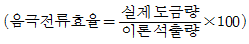
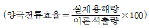
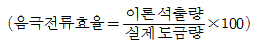
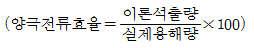
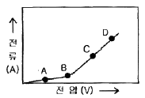

표면처리기능사 (2007-07-15 기출문제)
1과목: 금속재료일반
1. 두랄루민의 알루미늄에 어떤 금속원소를 첨가한 합금인가?
- 철 - 주석 - 규소
- 구리 - 마그네슘 - 망간
- 은 - 아연 - 니켈
- 납 - 니켈 - 마그네슘
(정답률: 86%)

2. 다음 중 Al-Si계 합금에 관한 설명으로 틀린 것은?
- 개량처리를 하게 되면 용탕과 모래 수분과의 반응으로 수소를 흡수하여 기포가 발생된다.
- 용융점이 높고 유동성이 좋지 않아 넓고 복잡한 모래형 주물에 이용된다.
- Si 함유량이 증가할수록 열팽창계수가 낮아진다.
- 실용합금으로는 10∼13%의 Si가 함유된 실루민이 있다.
(정답률: 75%)
3. 구상흑연주철에서 그 바탕조직이 펄라이트이면서 구상흑연의 주위를 유리된 페라이트가 감싸고 있는 조직을 무엇이라 하는가?
- 오스테나이트(austenite)조직
- 시멘타이트(cementitie)조직
- 레데뷰라이트(ledeburite)조직
- 불스 아이(bull' eye)조직
(정답률: 70%)
4. 한 개의 원자 주위에 있는 최근접 원자의 수를 배위수라 한다. 다음 중 체심입방격자(BCC)로 옳은 것은?
- 4개
- 6개
- 8개
- 12개
(정답률: 75%)
5. 다음 중 과냉(Super cooling)에 대한 설명으로 옳은 것은?
- 실내 온도에서 용융 상태인 금속이다.
- 과열된 고체금속을 냉각할 때 과냉이라고 한다.
- 응고점보다 낮은 온도에서 응고가 시작되는 현상이다.
- 금속이 응고점보다 높은 온도에서 냉각될 때 고체가 형성되는 현상이다.
(정답률: 79%)
6. 다음 중 충격시험의 목적이 아닌 것은?
- 재료의 충격저항을 알기 위하여
- 인성(toughness)을 알기 위하여
- 취성(brittleness)을 알기 위하여
- 경도(hardness)를 알기 위하여
(정답률: 64%)
7. 두 가지 이상의 금속 원소가 간단한 원자비로 결합되어 성분금속과는 다른 성질을 갖는 물질을 무엇이라 하는가?
- 공정 2원 합금
- 금속간 화합물
- 침입형 고용체
- 전율가용 고용체
(정답률: 93%)
8. 고온에서 사용되는 내열강 재료의 구비조건에 대한 설명으로 가장 관계가 먼 내용은?
- 기계적 성질이 우수해야 한다.
- 화학적으로 안정되어 있어야 한다.
- 열팽창에 대한 변형이 커야 한다.
- 조직이 안정되어 있어야 한다.
(정답률: 83%)
9. 다음 중 담금질에 따른 용적변화가 가장 큰 것은?
- 오스테나이트(austenite)
- 마텐자이트(martensite)
- 펄라이트(pearlite)
- 소르바이트(sorbite)
(정답률: 80%)
10. 다음 중 베어링합금의 구비조건으로 틀린 것은?
- 마찰계수가 커야 한다.
- 경도 및 내압력이 커야 한다.
- 소착에 대한 저항력이 커야 한다.
- 주소성 및 절삭형이 좋아야 한다.
(정답률: 69%)
11. 다음 금속재료 중 비중이 가장 낮은 것은?
- 아연
- 마그네슘
- 크롬
- 알류미늄
(정답률: 72%)
12. 순철의 자기변태점이라 하며, A2변태점이라고도 하는 온도는 약 몇 ℃인가?
- 210
- 723
- 768
- 910
(정답률: 77%)
13. 다음 중 폐수와 그에 따른 처리 방법이 올바르게 연결된 것은?
- 시안화물 폐수 - 산화처리
- 크롬산 폐수 - 침전처리
- 산 및 알칼리 폐수 - 환원처리
- 각종 폐수 중의 중금속 - 중화처리
(정답률: 72%)
14. 가공할 물품과 함께 강구, 침 등의 매체와 물 및 콤파운드를 통속에 넣고 이들을 회전시키거나 흔들어 주어 연마하는 방법은?
- 버프연마
- 배럴연마
- 벨트연마
- 전해연마
(정답률: 86%)
15. 도금액 제조시에 보조약품의 역할이 아닌 것은?
- 도금액의 ph를 유지한다.
- 양극의 용해를 좋게 한다.
- 도금액의 불순물을 제거한다.
- 도금면에 발생한 수소를 이용하여 피트를 만든다.
(정답률: 72%)
16. 광택니켈도금에서 도금액에 의한 피트 발생 결함의 원인이 아닌 것은?
- 니켈의 농도가 부족할 때
- 전처리가 불량할 때
- 붕산의 농도가 부족할 때
- 전류밀도가 낮을 때
(정답률: 62%)
17. 1 쿨롱(Coulomb)에 대한 설명으로 옳은 것은?
- 0.1A의 전류를 1초동안 통과시킨 전기량
- 1A의 전류를 1초동안 통과시킨 전기량
- 10A의 전류를 1초동안 통과시킨 전기량
- 100A의 전류를 1초동안 통과시킨 전기량
(정답률: 95%)
18. 다음 중 도금 두께의 계산과 관련이 가장 먼 것은?
- 화학당량
- 온도
- 시간
- 전류
(정답률: 78%)
19. 다음 중 구리도금할 때 황산의 주요 역할로 옳은 것은?
- 결정을 조대화시킨다.
- 전착성을 떨어뜨린다.
- 도금액의 전도도를 향상시킨다.
- 높은 전압에서 전류밀도를 얻는다.
(정답률: 65%)
20. 다음 중 예비탈지로만 사용되는 탈지법은?
- 용제 탈지
- 알칼리 탈지
- 전해 탈지
- 에멀션 탈지
(정답률: 67%)
2과목: 전기도금
21. 다음 중 징케이트욕에서 ZnO과 NaOH의 가장 이상적인 조성(g/L)은?
- ZnO : NaOH = 10 : 100
- ZnO : NaOH = 10 : 150
- ZnO : NaOH = 1 : 200
- ZnO : NaOH = 1 : 250
(정답률: 77%)
22. 전기 아연 도금 중 염화아연욕의 특징을 설명한 것으로 틀린 것은?
- 액의 전도성이 좋아 욕전압이 높다.
- 주물 등에 직접도금이 잘 된다.
- 광택 및 균일 전착성이 우수하다.
- 수소취성이 거의 생긱지 않는다.
(정답률: 32%)
23. 다음 중 도금액을 관리하기 위한 방법에 속하지 않는 것은?
- 헐셀 시험법
- 화학 분석법
- 자기력 시험법
- 하링셀 시험법
(정답률: 70%)
24. 다음 물질 중 산화제가 아닌 것은?
- H2O2
- HNO3
- H2S
- K2Cr2O7
(정답률: 63%)
25. 강전해질 0.1M-HCl과 0.01M-BaCl2이 가지는 4개의 이온 농도가 틀리게 표현된 것은?
- HCl의 [H+] = 0.1M
- HCl의 [Cl-] = 0.1M
- BaCl2의 [Ba2+] = 0.01M
- BaCl2의 [Cl-] = 0.01M
(정답률: 82%)
26. 리드 프레임 제조를 위해 동박에 은 도금한 후 반드시 필요한 공정은?
- 변색방지 처리
- 인산염 처리
- 산화출림 처리
- 스트라이크 구리도금
(정답률: 80%)
27. 니켈욕 중의 붕산의 역할과 관계가 없는 것은?
- 균일 전착성을 돕는다.
- ph를 일정하게 유지시킨다.
- 광택범위를 확대하고 도금층의 평할성을 돕는다.
- 내부응력을 증가시키는 역할을 한다.
(정답률: 67%)
28. 크롬의 이론석출량은 전류 효율이 100%라고 할 때 1Ah에 대해 0.323g이다. 전류효율이 15%라고 하면, 1Ah에 대하여 실제 석출되는 크롬의 양은 약 몇 g인가?
- 0.0485
- 0.2425
- 2.15
- 4.85
(정답률: 74%)
29. 도금작업 중 부스바 위에 물건이 떨어져 양근, 음극이 합선이 되었다. 다음 중 가정 먼저 처리해야 할 조치는?
- 빨리 떨어진 물건을 치워 버린다.
- 메인 스위치 전원을 차단한다.
- 상관에게 즉시 보고한다.
- 부스바를 해체시킨다.
(정답률: 77%)
30. 도금 피막의 경도를 정량적으로 측정하고자 할 때 사용되는 경도계로 옳은 것은?
- 마이크로비커스경도계
- 로크웰경도계
- 브리넬경도계
- 쇼어경도계
(정답률: 77%)
31. 내식성 시험의 한 방법으로 질산구리, 염화체2철, 염화암모늄 등으로 페이스트를 부착하여 내식성을 평가하는 시험은?
- 염수 분무 시험
- EC 시험
- 코로드 코오트 시험
- 페록실 시험
(정답률: 67%)
32. 다음의 전해질 용액 중 전리도가 가장 약한 것은?
- HCl
- HBr
- HCN
- CH3COOH
(정답률: 34%)
33. NaCl, KOH, (NH4)2SO4와 같이 수용액 속에서 거의 전부기전리하는 물질을 무엇이라 하는가?
- 강전해질
- 중간전해질
- 약전해질
- 비전해질
(정답률: 70%)
34. ph값이 2의 차이가 있다는 것은 실제 수소이온농도 [H+]에 있어서는 몇 배의 차이가 있다는 것인가?
- 1배
- 10배
- 100배
- 1000배
(정답률: 80%)
35. 전지 중에서 1차 전지가 아닌 것은?
- 니켈-카드뮴전지
- 수은전지
- 이산화망간전지
- 리튬전지
(정답률: 63%)
36. 다음 중 염기(鹽基)가 아닌 것은?
- KOH
- NaOH
- Na2SO4
- Ba(OH)2
(정답률: 59%)
37. 도금 작업에서 단위 면적에 흐르는 전류의 세기를 무엇이라고 하는가?
- 전류 밀도
- 전류 효율
- 분극 현상
- 분해 전압
(정답률: 77%)
38. 다음 중 이온화 경향이 가장 작은 금속은 무엇인가?
- Fe
- Pb
- Hg
- Na
(정답률: 82%)
39. 다음 중 도금의 전류효율을 정확히 나타낸 식은?




(정답률: 77%)
40. 그림에서 분해 전압을 나타내는 곳은?

- A
- B
- C
- D
(정답률: 85%)
3과목: 특수도금
41. 다음 중 양극 산화피막 처리용액으로 적당하지 않은 것은?
- 황산
- 수산(옥살산)
- 크롬산
- 염산
(정답률: 63%)
42. 플라스틱 면의 밀착성 및 갈고리 현상과 가장 관련이 깊은 도금 공정은?
- 에칭
- 탈지
- 표면조정
- 감수성 부여
(정답률: 70%)
43. 다음 중 두꺼운 도금을 가장 쉽게 얻을 수 있는 방법은?
- 경질 크롬
- 아연 도금
- 용융 도금
- 니켈 도금
(정답률: 65%)
44. 알루미늄 양극산화법 중 황산법에서 전류밀도가 2A/dm2이고 한면의 단면적이 2dm2인 얇은 판 양면을 양극산화할 때의 전류 세기는? (단, 판의 두께는 무시한다.)
- 2A
- 4A
- 6A
- 8A
(정답률: 70%)
45. 다음 중 무전해 니켈 도금에 환원제로 많이 사용되는 것은?
- 차아인산나트륨
- 포르말린
- 수산화나트륨
- 탄산나트륨
(정답률: 73%)
46. 인산염 피막처리 중 반응을 빨리하기 위하여 촉진제로 구리 이온을 함유한 액에서 처리하는 것을 무엇이라 하는가?
- 파커라이징
- 본데라이징
- 크로메이트처리
- 음극산화처리
(정답률: 70%)
47. 금속 표면에 화학적으로 산화막이나 무기명의 얇은 피막을 만드는 것은?
- 양극산화
- 금속용사
- 화성처리
- 금속침투
(정답률: 70%)
48. 경도에 따른 양극산화피막의 분류 중 경질피막에 해당하는 것은?
- 비커스경도(HV) 350∼450
- 비커스경도(HV) 250∼350
- 비커스경도(HV) 150∼250
- 비커스경도(HV) 150이하
(정답률: 74%)
49. 인산염피막의 내식성 시험 방법으로 가장 올바른 것은?
- 전해시험법
- 형광 X선시험법
- 중량측정법
- 염수분무시험
(정답률: 65%)
50. 다음 중 약품 취급시 주의사항으로 틀린 것은?
- 큰 병마개를 열때는 얼굴에 벼의 주둥이가 향하지 않도록 한다.
- 독극물이 들어있던 빈 병이나 빈 캔은 지정된 장소에 둔다.
- 불필요한 약품은 아무 곳에서나 바로 폐기한다.
- 약품취급 후 손, 발, 얼굴을 흐르는 물로 닦는다.
(정답률: 79%)
51. 다음 중 무전해 산성 니켈도금액에 사용되는 금속염은?
- 황산동
- 시안화금
- 염화파라듐
- 황산니켈
(정답률: 62%)
52. ABS수지상의 도금에서 엑셀레이터(Accelerator)처리를 하는 목적으로 가장 적당한 것은?
- 표면을 화학적으로 요철과 친수성을 만들기 위하여
- 주석(Sn)이온을 제거하고 팔라듐(Pd)을 활성화 하기 위하여
- 표면의 크롬(Cr)분을 제거하기 위하여
- 주석(Sn)과 팔라듐(Pd)화합물을 흡착시키기 위하여
(정답률: 69%)
53. 고온에서 금속 표면에 다른 금속을 확산, 침투시켜서 내식성을 향상시키는 금속침투 방법이 아닌 것은?
- 크로마이징(Chromizing)
- 실리코나이징(Siliconizing)
- 쉐라다이징(Sheradizing)
- 파카라이징(Parkerizing)
(정답률: 57%)
54. 화성처리 후 피막의 방칭성을 향상시키기 위하여 처리하는 것은?
- 봉공처리
- 착색처리
- 후처리
- 크로메이트처리
(정답률: 59%)
55. 다음 중 화학적 기상 도금의 특징이 아닌 것은?
- 처리온도가 일반적으로 높다.
- 주로 두꺼운 피막제조에 이용된다.
- 밀착성이 매우 우수하다.
- 복잡한 형태로 균일하게 도금할 수 있다.
(정답률: 36%)
56. 연마할 때 나오는 먼지는 어떻게 처리하는 것이 가장 좋은가?
- 선풍기를 통하여 밖으로 그냥 배출한다.
- 건강에 별 이상이 없으므로 그대로 둔다.
- 사이클론 등을 사용하여 제거한다.
- 저절로 밖으로 배출되므로 창문을 열어두기만 하면 된다.
(정답률: 75%)
57. 양극산화법에 의해 1dm2의 양극알루미늄에 Al2O3가 12.57mg 생성되었을 때의 피막 두께는 약 얼마인가? (단, 피막의 밀도는 2.9g/cm3이다.)
- 27.5㎛
- 34.1㎛
- 43.3㎛
- 45.7㎛
(정답률: 59%)
58. 도금의 안전일반에 관한 설명으로 틀린 것은?
- 작업장 내 설비의 배치는 자유로이 움직일 수 있는 넓이가 필요하다.
- 바닥의 장비는 미끄럼과 부식이 심하므로 일반적으로 목재깔개가 이용된다.
- 불량한 작업환경은 작업능률을 저하시켜, 작업자의 피로를 증가시켜 간접재해의 원인이 된다.
- 통로는 작업공정에 의한 소재가 흐르는 동선과 가급적 교차하도록 배치한다.
(정답률: 78%)
59. 표면을 잘 연마한 철제품을 모래에 묻혀서 400℃ 내외로 가열한 후 기름이나 수중에서 급냉하여 철표면에 미려한 청색막을 생기게 하는 방법은?
- 템퍼칼라
- 알칼리착색법
- 피막화성법
- 와이핑에펙트법
(정답률: 69%)
60. 선을 연속적으로 도금하는 방법으로서 용융체 속에 급냉시켜 단번에 강인한 조직을 얻는 작업은?
- 갈바나이징
- 센지미어
- 패턴팅
- 챠콜 와이프
(정답률: 50%)